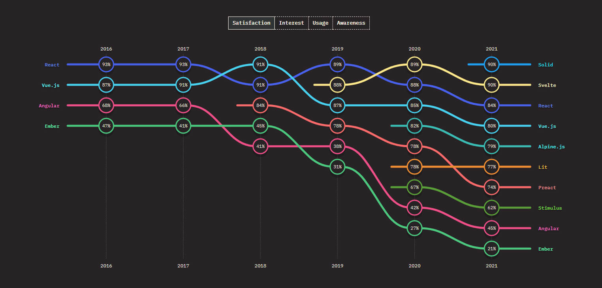

Evolution of frontend frameworks
Source:https://www.monocubed.com/blog/best-front-end-frameworks/
Why web development frameworks?
I'm a young engineer, fortunate to have been born into the era of
modern web development frameworks. So much so that the very first web
page I built was in React. It's hard for me to imagine how the
internet functioned before these frameworks existed. But as I always
say, you can't truly appreciate the present without understanding the
past. So, I set out on a journey to explore the evolution of web
development — why frameworks were created and how things worked before
their time.
P.S: This blog will be mostly about frontend frameworks.
Written by Aswin Unnikrishnan. 10/02/2025